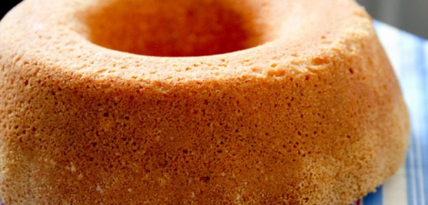

Bolo simples para Café
Ingredientes
- 2 xícaras (chá) farinha de trigo
- 2 xícaras (chá) açúcar
- 1 xícara (chá) leite
- 2 ovos
- 4 colheres (sopa) óleo
- 1 pitada de sal
- 1 colher (sopa) fermento em pó
- essência de baunilha a gosto (opcional)
Modo de Preparo
- Separe o fermento
- Na batedeira bata os demais ingredientes por aproximadamente 5 minutos
- Retire a tigela da batedeira, junte o fermento e misture cuidadosamente com uma colher
- Despeje a massa do bolo em uma forma de cone untada e enfarinhada
- Leve ao forno preaquecido a 180ºC por aproximadamente 35 minutos ou até que ao espetar um palito ele saia limpo